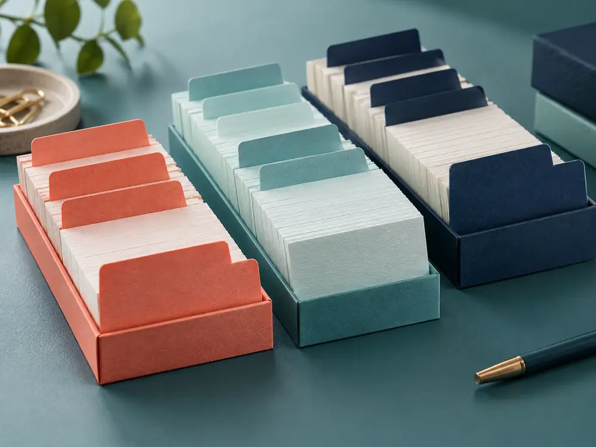

登録 → 取り込み → 試用 → 本契約
本契約の前に、やめることもできます。試用のあいだに費用はかかりません。日数・手順は見本上の設定です。
登録1日目・約5分
- すること
- メールアドレスを入れ、届いたメールのリンクを開きます。事業の名前を入れると、最初の台帳ができます。
- 用意するもの
- メールアドレス（カードの登録はありません）
取り込み1〜3日目・30分〜
- すること
- いま使っている表計算のデータをCSVにして、列ごとに取り込みます。取り込まずに、新しく書き始めても構いません。
- 用意するもの
- 表計算のファイル（任意）。量が多い場合は導入サポート（1回 11,000円・税込・見本用の架空価格）も選べます
試用14日間
- すること
- 実際の問い合わせや予約を入れて、ふだんの仕事で使ってみます。家族やスタッフも招待できます。
- 用意するもの
- 一緒に使う人のメールアドレス
本契約15日目から
- すること
- 続ける場合だけ、プランを選び、支払い方法を登録します。続けない場合は、何もしなくて構いません。
- 用意するもの
- 支払い方法（クレジットカード、または銀行振込）
表計算の列を、台帳の列に対応させる。
1つの表に問い合わせと予約が混ざっていても、項目ごとに行き先を選べます。
- 手順 1表計算ソフトで、ファイルを「CSV」の形式で保存します。
- 手順 2台帳の「取り込み」を開き、CSVのファイルを選びます。
- 手順 3表の項目ごとに、どの列のどの欄に入れるかを選びます。使わない項目は「取り込まない」にします。
- 手順 4最初の5行が表示されるので、見比べてから取り込みます。やり直しもできます。
よくある質問
回答の内容は見本上の設定です。ここにない質問は、お問い合わせからどうぞ。決まっていない段階のご相談も受けています。
試用（3件）
無料期間が終わると、自動で料金がかかりますか。
かかりません。カードを登録しないため、続ける場合だけ、ご自身でプランを選んでいただきます。
無料期間中に使える機能に制限はありますか。
スタンダードプランと同じ機能を使えます。台帳5つ・利用者10人までです。
試用中に入れたデータは、本契約で引き継げますか。
引き継げます。プランを選ぶだけで、そのまま使い続けられます。
料金（2件）
支払い方法は何がありますか。
クレジットカードと銀行振込（年払いのみ）を想定しています。
途中でプランを変えられますか。
変えられます。上げる場合は翌月分から、下げる場合は台帳・利用者の数が範囲内であれば翌月分から変わります。
データ（3件）
解約したら、データはどうなりますか。
解約後30日間は、CSVで書き出せます。その後、データは削除されます。
データはどこに保存されますか。
国内のデータセンターに保存し、毎日バックアップを取る想定です。実際の保存先は、利用規約に書きます。
表計算のファイルをそのまま取り込めますか。
CSVで書き出してから取り込みます。項目の対応は、取り込みの画面で選べます。
使い方（3件）
パソコンが苦手でも使えますか。
表計算に名前や日付を入力したことがあれば、同じ感覚で使えます。最初は1つの列だけで始めることをおすすめしています。
スマートフォンだけでも使えますか。
使えます。パソコン・タブレット・スマートフォンのブラウザに対応しています。アプリのインストールはありません。
お客さまにも画面を見せられますか。
予約受付ページ（スタンダード）だけ、お客さまが見られます。台帳そのものは、招待した利用者しか見られません。